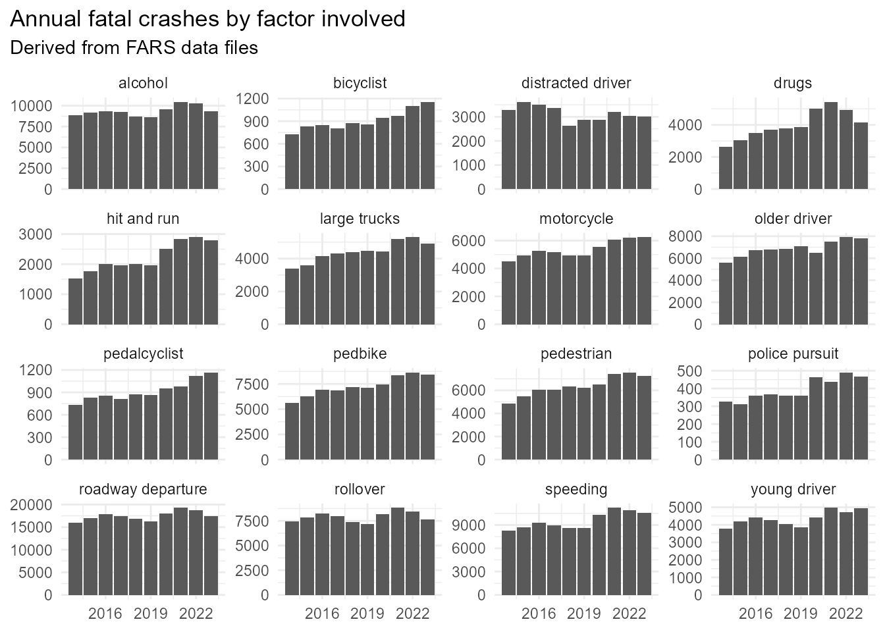
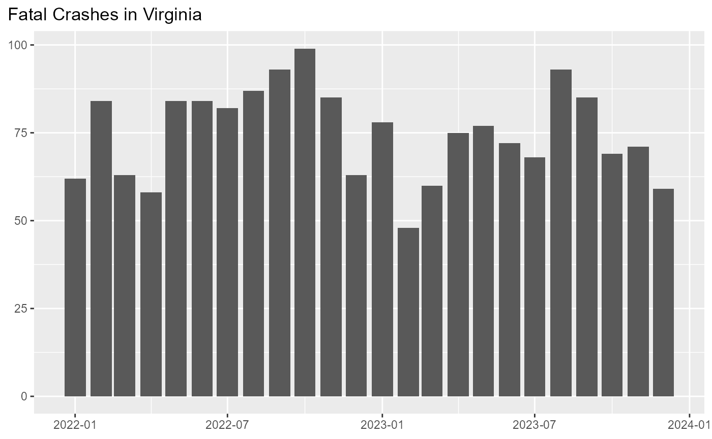
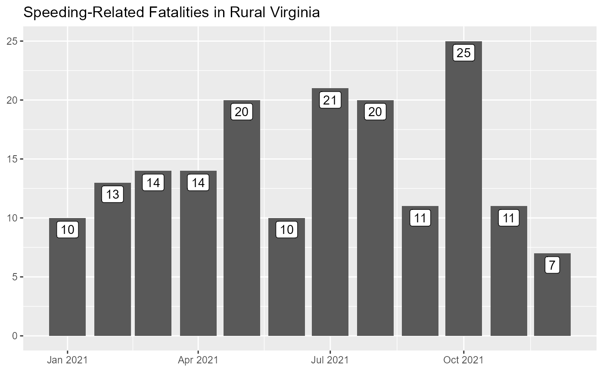
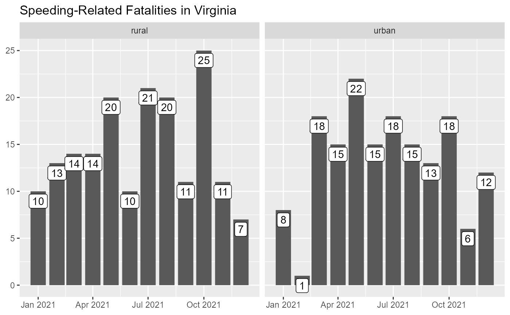
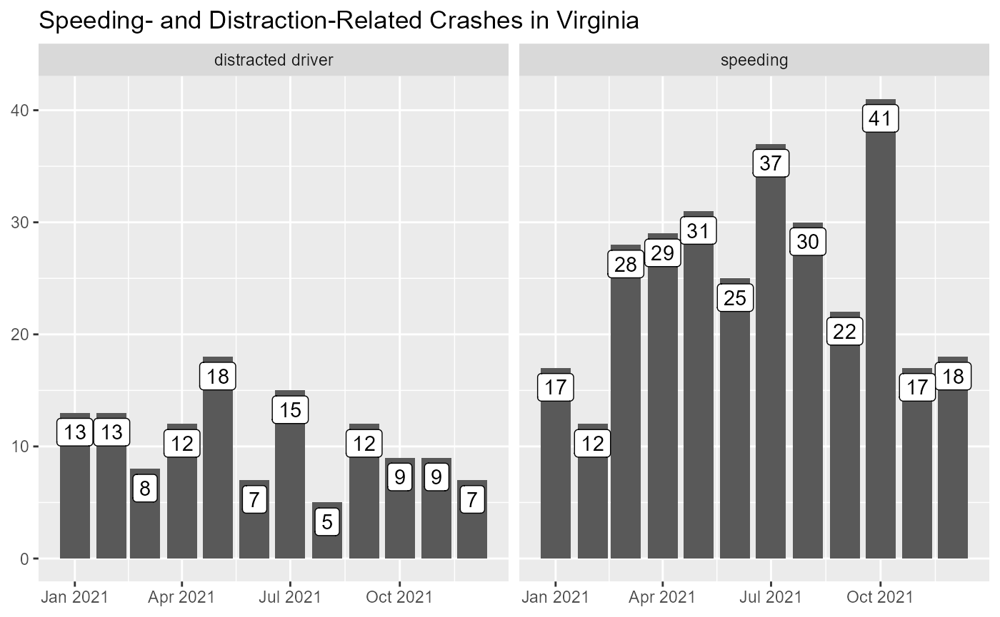

Generating Counts
A first step in many transportation safety analyses involves counting
the number of relevant crashes, fatalities, or people involved.
counts() lets users specify what to count,
where to count them (rural/urban and/or in specified states or
regions), who to include, the interval over which to
count (annually or monthly), and factors involved in the
crashes. It returns a simple tibble that can be easily piped into
ggplot() to quickly visualize counts.
First we load the required libraries:
## Warning: package 'ggplot2' was built under R version 4.3.3Then pull a year of FARS data for Virginia:
myFARS <- get_fars(years = 2021, states = "VA", proceed = T)## ✓ 2021 data downloaded
## Preparing raw data files...
## ✓ Accident file processed
## ✓ Vehicle file processed
## ✓ Person file processed
## ✓ Weather file(s) processed
## ✓ Crash risk factors file processed
## ✓ Vehicle-level files processed
## ✓ PBtype file processed
## ✓ SafetyEq file processed
## ✓ Person-level files processed
## ✓ Flat file constructed
## ✓ Multi_acc file constructed
## ✓ Multi_veh file constructed
## ✓ Multi_per file constructed
## ✓ SOE file constructed
## ✓ Prepared files saved in C:/Users/s87ja/AppData/Local/Temp/RtmpGyYhCh/FARS data/prepd/2021
## ✓ Codebook file saved in C:/Users/s87ja/AppData/Local/Temp/RtmpGyYhCh/FARS data/prepd/Then we can use counts() to reduce the data to desired
counts.
Here we count crashes:
This returns the following dataframe:
knitr::kable(my_counts, format = "html")| month | date | n | what | states | region | urb | who |
|---|---|---|---|---|---|---|---|
| April | 2021-04-01 | 83 | crashes | all | all | all | all |
| August | 2021-08-01 | 77 | crashes | all | all | all | all |
| December | 2021-12-01 | 74 | crashes | all | all | all | all |
| February | 2021-02-01 | 47 | crashes | all | all | all | all |
| January | 2021-01-01 | 50 | crashes | all | all | all | all |
| July | 2021-07-01 | 100 | crashes | all | all | all | all |
| June | 2021-06-01 | 65 | crashes | all | all | all | all |
| March | 2021-03-01 | 57 | crashes | all | all | all | all |
| May | 2021-05-01 | 87 | crashes | all | all | all | all |
| November | 2021-11-01 | 79 | crashes | all | all | all | all |
| October | 2021-10-01 | 108 | crashes | all | all | all | all |
| September | 2021-09-01 | 79 | crashes | all | all | all | all |
Which we can graph:
my_counts %>%
ggplot(aes(x=date, y=n, label=scales::comma(n))) +
geom_col() +
geom_label(vjust=1.2) +
labs(x=NULL, y=NULL, title = "Fatal Crashes in Virginia")
We could alternatively count fatalities:
counts(
myFARS,
what = "fatalities",
interval = c("month")
) %>%
ggplot(aes(x=date, y=n, label=scales::comma(n))) +
geom_col() +
geom_label(vjust=1.2) +
labs(x=NULL, y=NULL, title = "Fatalities in Virginia")
Or fatalities involving speeding:
counts(myFARS,
what = "fatalities",
interval = c("month"),
involved = "speeding"
) %>%
ggplot(aes(x=date, y=n, label=scales::comma(n))) +
geom_col() +
geom_label(vjust=1.2) +
labs(x=NULL, y=NULL, title = "Speeding-Related Fatalities in Virginia")
Or fatalities involving speeding in rural areas:
counts(myFARS,
what = "fatalities",
where = list(urb="rural"),
interval = c("month"),
involved = "speeding"
) %>%
ggplot(aes(x=date, y=n, label=scales::comma(n))) +
geom_col() +
geom_label(vjust=1.2) +
labs(x=NULL, y=NULL, title = "Speeding-Related Fatalities in Rural Virginia")
We can use compare_counts() to quickly produce
comparison graphs.
Here we compare speeding-related fatalities in rural and urban areas:
compare_counts(
df = myFARS,
interval = "month",
involved = "speeding",
what = "fatalities",
where = list(urb="rural"),
where2 = list(urb="urban")
) %>%
ggplot(aes(x=date, y=n, label=scales::comma(n))) +
geom_col() +
geom_label(vjust=1.2) +
facet_wrap(.~urb) +
labs(x=NULL, y=NULL, title = "Speeding-Related Fatalities in Virginia", fill=NULL)
And here we compare speeding-related crashes to those related to distraction:
compare_counts(
df = myFARS,
interval = "month",
involved = "speeding",
involved2 = "distracted driver",
what = "crashes",
) %>%
ggplot(aes(x=date, y=n, label=scales::comma(n))) +
geom_col() +
geom_label(vjust=1.2) +
facet_wrap(.~involved) +
labs(x=NULL, y=NULL, title = "Speeding- and Distraction-Related Crashes in Virginia", fill=NULL)
See the documentation for more information on the available options. * counts() * compare_counts()